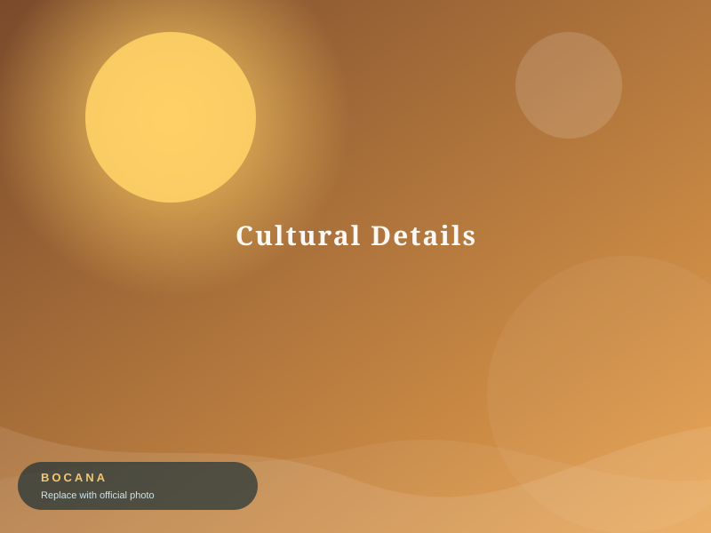

Photo Gallery
Moments of Bocana
A visual journey through festival, community, culture, nature, and people.

The photos above are placeholders. Official Barangay Bocana photographs will replace them in the
assets/images/ folder. Every image includes an alt
description and a code comment marking where the official photo should go.